- Capture the excitement of arriving in Chicago, whether it's by plane, train, or car.
- Share your first impressions of the city's skyline, the bustling streets, and the vibrant energy that permeates the atmosphere.
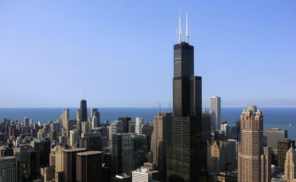

 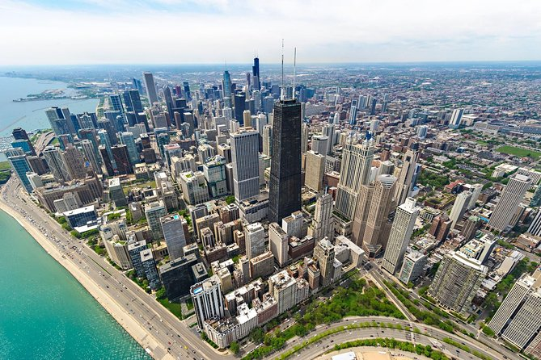
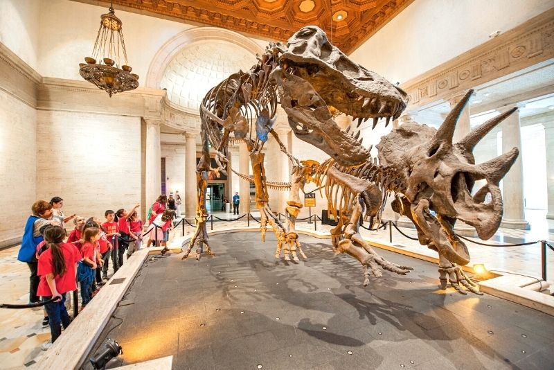
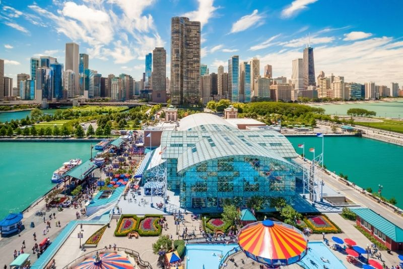
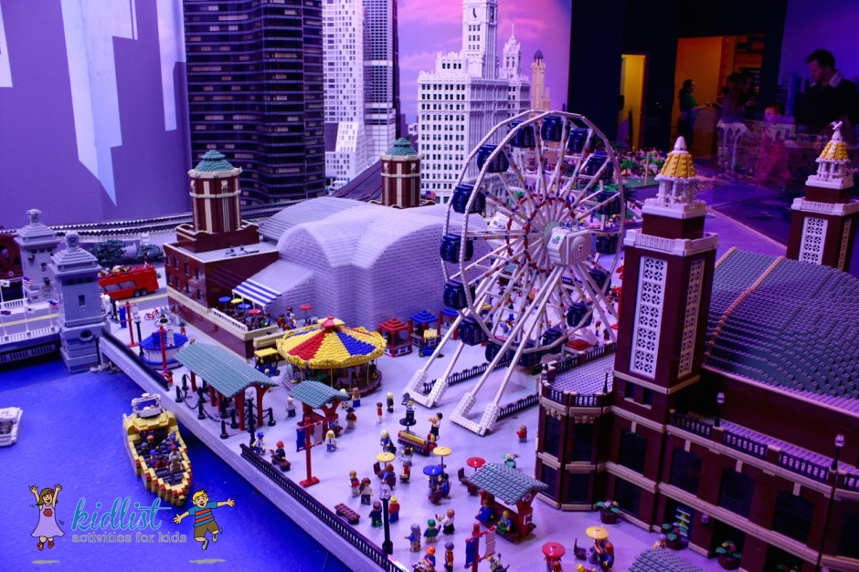
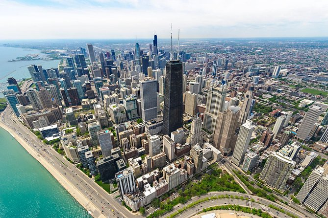
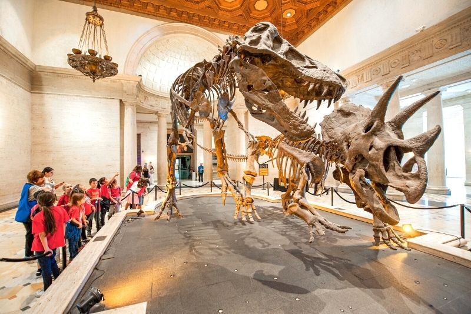
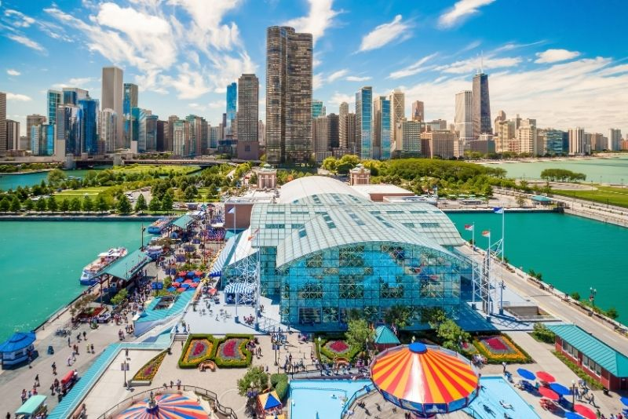
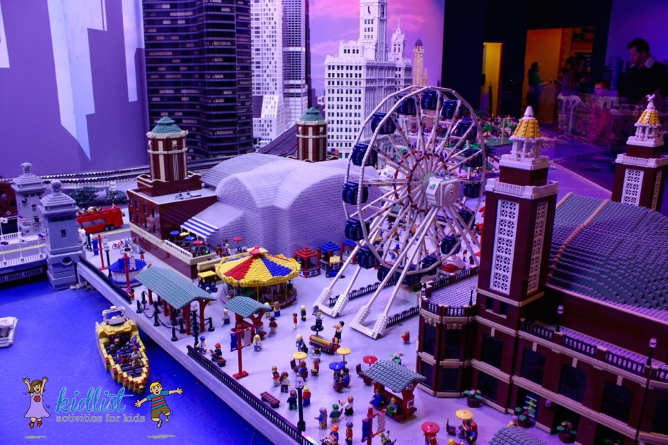
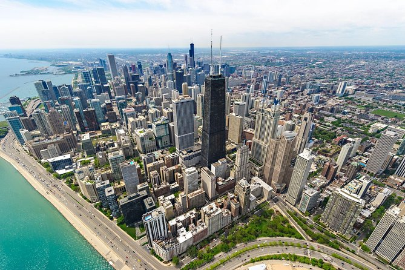
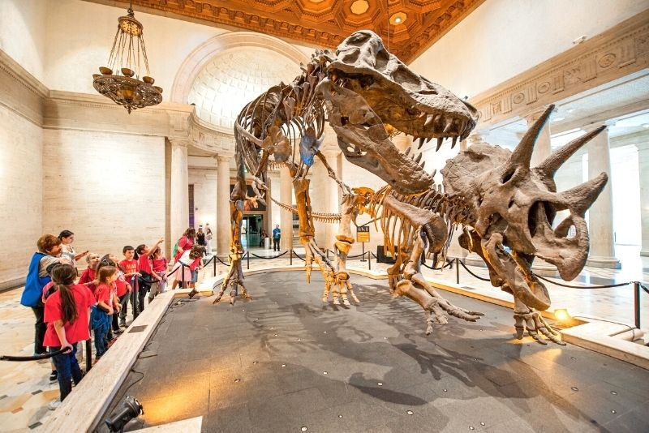
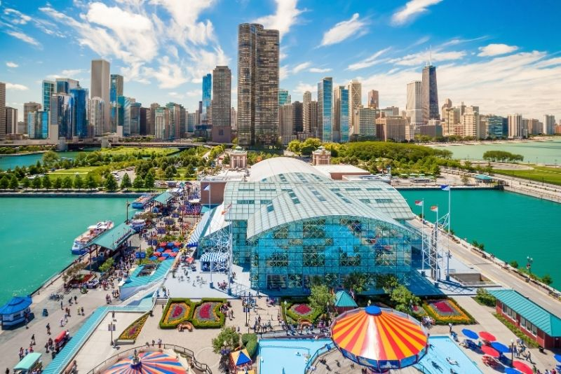
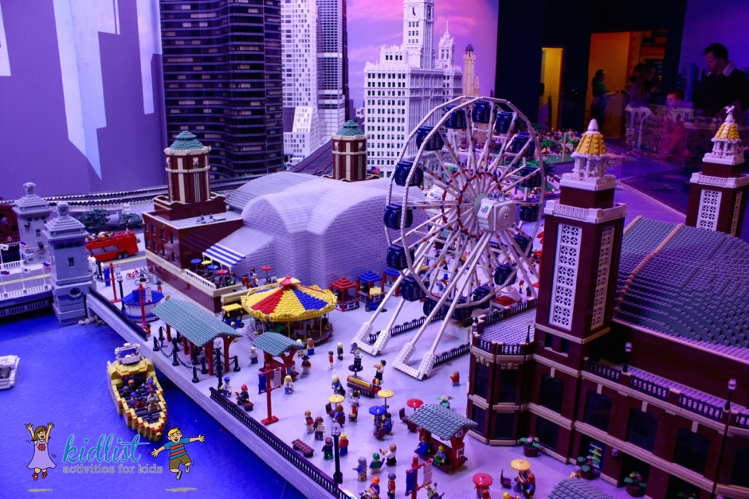
Welcome to my travel vlog as we embark on an exciting journey through the vibrant city of Chicago! Join me as we explore the stunning architecture, indulge in deep-dish pizza, soak up the cultural scene, and experience the charm of the Windy City. Get ready for an adventure filled with iconic landmarks, hidden gems, and unforgettable moments.
<>Arrival and First Impressions
<>Iconic Landmarks
- Visit Millennium Park and marvel at Cloud Gate, also known as "The Bean."
- Take a stroll along the Chicago Riverwalk and enjoy the stunning views of the city's architecture.
- Capture the grandeur of Willis Tower (formerly known as Sears Tower) from the Skydeck and step out onto "The Ledge" for a thrilling experience.
<>Cultural Delights
- Explore the Art Institute of Chicago, home to a vast collection of masterpieces, including Grant Wood's iconic "American Gothic."
- Discover the Museum Campus, where you can visit the Field Museum, Shedd Aquarium, and Adler Planetarium.
- Immerse yourself in Chicago's theater scene by catching a Broadway show or enjoying a performance at the famous Steppenwolf Theatre.
<>Neighborhood Adventures
- Wander through the colorful streets of Chicago's neighborhoods, such as Wicker Park, Lincoln Park, and Pilsen.
- Explore Navy Pier, an iconic entertainment destination offering stunning views, amusement rides, and fireworks displays.
- Indulge in the culinary delights of Chicago, including deep-dish pizza at Giordano's or Lou Malnati's and Chicago-style hot dogs at Portillo's.
<>Lakefront Charm
- Wander through the colorful streets of Chicago's neighborhoods, such as Wicker Park, Lincoln Park, and Pilsen.
- Explore Navy Pier, an iconic entertainment destination offering stunning views, amusement rides, and fireworks displays.
- Indulge in the culinary delights of Chicago, including deep-dish pizza at Giordano's or Lou Malnati's and Chicago-style hot dogs at Portillo's.
<>Sports and Entertainment
- Wander through the colorful streets of Chicago's neighborhoods, such as Wicker Park, Lincoln Park, and Pilsen.
- Explore Navy Pier, an iconic entertainment destination offering stunning views, amusement rides, and fireworks displays.
- Indulge in the culinary delights of Chicago, including deep-dish pizza at Giordano's or Lou Malnati's and Chicago-style hot dogs at Portillo's.